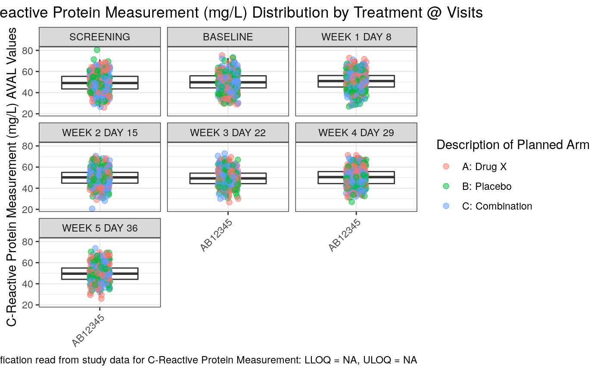

g_boxplot.RdA box plot is a method for graphically depicting groups of numerical data through their quartiles. Box plots may also have lines extending vertically from the boxes (whiskers) indicating variability outside the upper and lower quartiles, hence the term box-and-whisker. Outliers may be plotted as individual points. Box plots are non-parametric: they display variation in samples of a statistical population without making any assumptions of the underlying statistical distribution. The spacings between the different parts of the box indicate the degree of dispersion (spread) and skewness in the data, and show outliers. In addition to the points themselves, they allow one to visually estimate various L-estimators, notably the interquartile range, midhinge, range, mid-range, and trimean.
g_boxplot( data, biomarker, param_var = "PARAMCD", yaxis_var, trt_group, xaxis_var = NULL, loq_flag_var = "LOQFL", loq_legend = TRUE, unit = NULL, color_manual = NULL, shape_manual = NULL, box = TRUE, ymax_scale = NULL, ymin_scale = NULL, dot_size = 2, alpha = 1, facet_ncol = NULL, hline = NULL, rotate_xlab = FALSE, font_size = NULL, facet_var = NULL )
| data | data frame with variables which will be displayed in the plot. |
|---|---|
| biomarker | biomarker to visualize e.g. IGG. |
| param_var | name of variable containing biomarker codes e.g. PARAMCD. |
| yaxis_var | name of variable containing biomarker results displayed on Y-axis e.g. AVAL. |
| trt_group | name of variable representing treatment trt_group e.g. ARM. |
| xaxis_var | variable used to group the data on the x-axis. |
| loq_flag_var | name of variable containing LOQ flag e.g. LOQFL. |
| loq_legend | `logical` whether to include LoQ legend. |
| unit | biomarker unit label e.g. (U/L) |
| color_manual | vector of colour for trt_group |
| shape_manual | vector of shapes (used with log_flag_var) |
| box | add boxes to the plot (boolean) |
| ymax_scale | maximum value for the Y axis |
| ymin_scale | minimum value for the Y axis |
| dot_size | plot dot size. |
| alpha | dot transparency (0 = transparent, 1 = opaque) |
| facet_ncol | number of facets per row. NULL = Use the default for facet_wrap |
| hline | y-axis value to position a horizontal line. NULL = No line |
| rotate_xlab | 45 degree rotation of x-axis label values. |
| font_size | point size of tex to use. NULL is use default size |
| facet_var | variable to facet the plot by, or "None" if no faceting required. |
ggplot object
# Example using ADaM structure analysis dataset. library(random.cdisc.data) ADSL <- cadsl ADLB <- cadlb g_boxplot(ADLB, biomarker = "CRP", param_var = "PARAMCD", yaxis_var = "AVAL", trt_group = "ARM", loq_flag_var = "LOQFL", loq_legend = FALSE, unit = "AVALU", shape_manual = c("N" = 1, "Y" = 2, "NA" = NULL), hline = NULL, facet_var = "AVISIT", xaxis_var = "STUDYID", alpha = 0.5, rotate_xlab = TRUE )